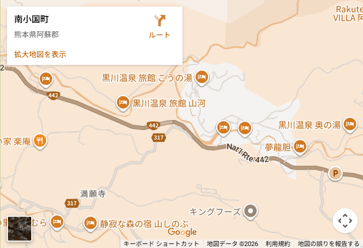

アクセス

- 所在地
-
〒869-2402
熊本阿蘇郡南小国町
- 受付時間
- 9:00-18:00
- お問い合わせ
-
TEL:0123-45-6789
FAX:0123-45-6789
お車でお越しのお客様
掲載の所要時間は、最短〜標準的な目安です。道路状況や天候等により前後する
場合がございますので、あらかじめご了承ください。
-
- 福岡市発
- 約2時間(日田IC下車・国道経由)
-
- 熊本市発
- 約1時間45分(国道経由)
-
- 別府市発
- 約1時間45分(九州IC下車・国道経由)
-
- 久留米市発
- 約1時間45分(日田IC下車・国道経由)
チェーンや冬用タイヤの装着をお薦めしております。
公共交通機関でお越しのお客様
公共交通機関をご利用の際は、黒川温泉エリアまでは路線バスのご利用が便利です。
JR・航空機でお越しの場合は、到着地からバス・レンタカー・タクシー等へのお乗り換え
をお願いいたします。
-
- 熊本方面
- 九州横断バス：「黒川温泉」バス停下車
-
- 福岡・日田方面
- 高速 福岡高速バス：「黒川温泉」バス停下車
-
- 由布院・別府方面
- 九州横断バス：「黒川温泉」バス停下車